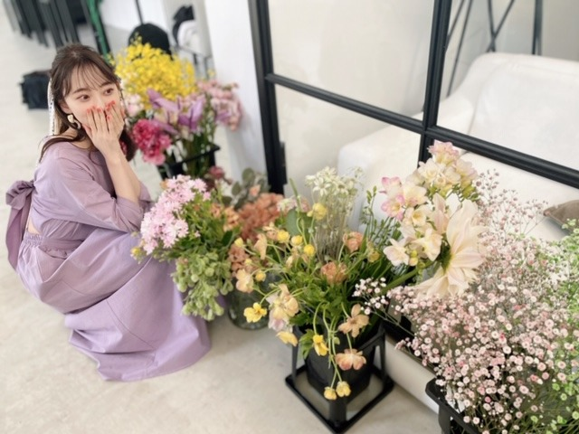

2020/0415Wed#おうち時間 #ダンス
ずっとお家にいてゲームやアニメにご飯に睡眠...
むくむく太る一方だったので今日から
ダンスの自主練を始めました☺︎
私の苦手なジャンルとか
動きを克服できるように
いい汗かきながら頑張ります!
今覚えてるのは
Red VelvetさんのPsycho
TWICEさんのFeel Special
BLACKPINKさんのKill This Love
IZ*ONEさんのFIESTA、SPACESHIP、AYAYAYA
EVERGLOWさんのAdios、Bon Bon Chocolat、DUNDUN
MAMAMOOさんのHIP
Wanna OneさんのEnergetic
です
ちなみに今日インフルエンサーも
やりました。笑
乃木坂はあまり激しいダンス曲は少ないですが
だからこそ全身をちゃんと動かせるようにして
1つ1つの振りが魅力的に見えたらいいなと
思っています
他にもおすすめのダンス
あったら教えてください☺︎
早く歌番組やライブで
パフォーマンスしたいです...
( ; _ ; )
それまで練習頑張ります!

そして
GRLさんのモデルさせていただいています!

今こそおうち時間活用して、
サイトを見てみてくださいね✨
このワンピースお気に入り!

オトナミオナ
では〜
2020/04/15 19:00
コメント(340)
お疲れ様です！
最近、僕もダンスの練習し始めたんですけど、なかなか上手くなりませんどうしたらいいですか？
最近、僕もダンスの練習し始めたんですけど、なかなか上手くなりませんどうしたらいいですか？
僕も体を動かし始めて何日か
経ってるけど気付いた事がいくつか
あるんだよなぁ。
まず、日常生活を送ってるだけで
かなりのカロリーを消費していた事。
特に運動しなかったし
食事量も今より全然多かったし
でも、太らなかった。
そして、いざ体を動かし始めても
全然痩せてこない。不思議だ。
食べた分だけ100%体に吸収されてるのか
と思うほど。
僕の愚痴はこれくらいにしとこう。
自主練の様子も可愛いですね〜
僕はてっきり1Dだと思ってたよ。
予想が全く当たらんいい加減なやつだ。
GRLさんは無限に出てくるんじゃないか
というくらい更新されてるんで
チョイチョイ見ております。
僕のお気に入りです。
では♪
経ってるけど気付いた事がいくつか
あるんだよなぁ。
まず、日常生活を送ってるだけで
かなりのカロリーを消費していた事。
特に運動しなかったし
食事量も今より全然多かったし
でも、太らなかった。
そして、いざ体を動かし始めても
全然痩せてこない。不思議だ。
食べた分だけ100%体に吸収されてるのか
と思うほど。
僕の愚痴はこれくらいにしとこう。
自主練の様子も可愛いですね〜
僕はてっきり1Dだと思ってたよ。
予想が全く当たらんいい加減なやつだ。
GRLさんは無限に出てくるんじゃないか
というくらい更新されてるんで
チョイチョイ見ております。
僕のお気に入りです。
では♪
前髪なしほんとにすき！！！！！！
ブログ更新ありがとう
未央奈ちゃんブログ更新多いいの嬉しい
未央奈ちゃんブログ更新多いいの嬉しい
未央奈ブログ更新ありがとう！
ダンスの自主練お疲れ様！
僕も今ランニングから帰ってきた所です！
まだ現役だけど久しぶりに走ったら足が動かなかった(>_<)
やっぱ適度に動かさないと鈍るよね！
ダンスできるスペースあっていいな〜！
また未央奈のダンス見れる日を楽しみにしてるね！
今日もお疲れ様！
次のブログも楽しみに待ってるね！
ダンスの自主練お疲れ様！
僕も今ランニングから帰ってきた所です！
まだ現役だけど久しぶりに走ったら足が動かなかった(>_<)
やっぱ適度に動かさないと鈍るよね！
ダンスできるスペースあっていいな〜！
また未央奈のダンス見れる日を楽しみにしてるね！
今日もお疲れ様！
次のブログも楽しみに待ってるね！
掘ちゃんブログ更新ありがとうございます！
１日に2回のブログで嬉しいです！
ダンスで安全に運動がんばってください
１日に2回のブログで嬉しいです！
ダンスで安全に運動がんばってください
ITZYちゃんのWANNABE がおすすめです！
みおなちゃんかわいいですすごく
みおなちゃんかわいいですすごく
TWICE覚えてるんだ！！
頑張って下さい！！
頑張って下さい！！
ブログ更新ありがとうございます。
歌番組の未央奈、踊ってるの未央奈いつも最高です。
自主練しててすごいです‼️僕も休校になってストレスが
たまってたまに外を走っています。未央奈ちゃん見たいに
自主練できるように頑張ります‼️
未央奈ちゃんもこれからも頑張って下さい。
歌番組の未央奈、踊ってるの未央奈いつも最高です。
自主練しててすごいです‼️僕も休校になってストレスが
たまってたまに外を走っています。未央奈ちゃん見たいに
自主練できるように頑張ります‼️
未央奈ちゃんもこれからも頑張って下さい。
こんばんは
ダンス自主練かぁ
努力して頑張ってるのは尊敬します！
堀ちゃんのブログ毎日の楽しみになってます
これからも応援してます
ダンス自主練かぁ
努力して頑張ってるのは尊敬します！
堀ちゃんのブログ毎日の楽しみになってます
これからも応援してます
見習わなければ(^^;
最近まためちゃめちゃ可愛くなった
これからもずーっと推します！！！
これからもずーっと推します！！！
1日に2回もブログありがとう
嵐の『Turning Up』振り動画も載ってるよ！
ダンス自主練は偉いですよー♪
K-POPダンスは激しいですよねー！
楽しみながら鍛えられそうですね☆
乃木坂楽曲ダンスも美しいですー！
アナスターシャも感動しました♡✨
練習着姿もとっても耀かしいですし、
GRLさんモデルもキラキラしてます♡✌
オトナミオナもとっても眩しいです♡☺
K-POPダンスは激しいですよねー！
楽しみながら鍛えられそうですね☆
乃木坂楽曲ダンスも美しいですー！
アナスターシャも感動しました♡✨
練習着姿もとっても耀かしいですし、
GRLさんモデルもキラキラしてます♡✌
オトナミオナもとっても眩しいです♡☺
乃木坂ちゃん達の前向きなお家時間を見て、自分も体動かして堀ちゃんの写真集と優しく楽しいブログを楽しみに頑張ります。
堀未央奈❤こんばんは❗今日２回目のブログ有難うね＼(^o^)／家に居る時はゲームとか映画ばっかり観ているんだね(^-^)v未央奈❤太らないように気を付けてね。早くライブとか歌番組に出れるといいね(^_^)vコロナウイルスいつなくなるんだろうね。早く良くなるといいね(^_^)v家でダンスしているんだね(^_^)v頑張ってね(*^O^*)色んなダンス出来るの？インフルエンサーは、ダンス激しいよね。でも俺は、このダンス好きだよ(*^O^*)難しくて踊れないけどね。これからも体調に気を付けてね(^o^)v未央奈可愛いね(*^_^*)愛してる ♥❤(#^.^#)
完璧になったら、ぜひ！見せてください♡
みおちゃん♡
私も一週間おうちにずっといて、朝昼晩しっかり食べていたら太りましたよー。
こんな時こそ、この状況が収束して日常が再開した時にパワーアップした自分で在りたいなぁって思って、色々考えたり勉強したりしてます。
お互い前向きに頑張ろね！
私も一週間おうちにずっといて、朝昼晩しっかり食べていたら太りましたよー。
こんな時こそ、この状況が収束して日常が再開した時にパワーアップした自分で在りたいなぁって思って、色々考えたり勉強したりしてます。
お互い前向きに頑張ろね！
レンタンが羨ましいなぁ。
未央奈が眼を着けてるってことは、今後要注目だね。
大人メイクマジヤバめ、凄くイケてる。ますます惚れちゃいます。
未央奈が眼を着けてるってことは、今後要注目だね。
大人メイクマジヤバめ、凄くイケてる。ますます惚れちゃいます。
未央奈ちゃんこんばんは♪
練習ファイティン!
俺も運動しっかりやるようにしてるよ(*^^*)
大人な雰囲気に見惚れてしまいました(〃^ー^〃)
綺麗♪
明日もHAPPYを
お休みなさい(^-^ゞ
練習ファイティン!
俺も運動しっかりやるようにしてるよ(*^^*)
大人な雰囲気に見惚れてしまいました(〃^ー^〃)
綺麗♪
明日もHAPPYを
お休みなさい(^-^ゞ
こんばんは。ブログ更新ありがとうございます。
ダンスか～。私はダンス全くわからないのです。アイドルがダンスを踊るようになったのは、70年代のアイドルソロ歌手が登場した時、既に簡単な振りをしていたのを覚えています。80年代に入ってMTVが登場して、マイケルジャクソンやマドンナなんかがダンスを積極的に見せるようになってから、いっきに広まっていったという認識です。私は当時すでにギターに夢中だったので、サウンド面ばかりを追いかけていましたね。
ではまた。
ダンスか～。私はダンス全くわからないのです。アイドルがダンスを踊るようになったのは、70年代のアイドルソロ歌手が登場した時、既に簡単な振りをしていたのを覚えています。80年代に入ってMTVが登場して、マイケルジャクソンやマドンナなんかがダンスを積極的に見せるようになってから、いっきに広まっていったという認識です。私は当時すでにギターに夢中だったので、サウンド面ばかりを追いかけていましたね。
ではまた。
踊ってれば健康的に良いし振り付けも忘れないだろうから自宅でやれる事はとことん頑張ってね
堀ちゃん、こんばんは！
僕も気づいたら4時間くらい昼寝してました…
お昼ご飯食べてそのままソファに寝っ転がったら起きたの5時半でびっくりしました笑
堀ちゃんのダンス凄い好きです！歌番組とかで俯瞰になってもどれが堀ちゃんかすぐ分かります笑
オトナミオナ可愛すぎます…2nd写真集のTwitterでのカコミオナも凄い可愛いです!!
今日はこの辺で。ではでは。
僕も気づいたら4時間くらい昼寝してました…
お昼ご飯食べてそのままソファに寝っ転がったら起きたの5時半でびっくりしました笑
堀ちゃんのダンス凄い好きです！歌番組とかで俯瞰になってもどれが堀ちゃんかすぐ分かります笑
オトナミオナ可愛すぎます…2nd写真集のTwitterでのカコミオナも凄い可愛いです!!
今日はこの辺で。ではでは。
毎日のようにブログ更新ありがとう！
コメントするのは今日が初めてだけどいつも楽しみながら読ませてもらってます。
普段からファンとの交流を大切にしてるし、バレッタの時入ったばかりだし、周りに2期生が誰もいないなかセンターをやり遂げた未央奈ちゃんを人として尊敬しています！
わざわざコメントして伝えるほどのことでもないし、何も知らない自分が簡単に言うのも失礼かもしれないけど、今なぜか急に伝えたくなったのでコメントしました(笑)
またコメントするか分からないけど読んでくれたら嬉しいです(笑)
コロナ等に気をつけてね！
では。
コメントするのは今日が初めてだけどいつも楽しみながら読ませてもらってます。
普段からファンとの交流を大切にしてるし、バレッタの時入ったばかりだし、周りに2期生が誰もいないなかセンターをやり遂げた未央奈ちゃんを人として尊敬しています！
わざわざコメントして伝えるほどのことでもないし、何も知らない自分が簡単に言うのも失礼かもしれないけど、今なぜか急に伝えたくなったのでコメントしました(笑)
またコメントするか分からないけど読んでくれたら嬉しいです(笑)
コロナ等に気をつけてね！
では。
ご存じの通り、(´･ω･｀)知らんがなの
星座は“てんびん座”です
みんなが憧れる星座ランキング
第１位ですよね
ただ、夜空を見上げて星座を見ても
どこをどう見たら“てんびん”なのか
さっぱりわかりません
その前にてんびん座が見つからない
まぁ、たまには空を見上げるのも
いいものですね．．．
な〜んて思ってたら首の筋を痛めました
そらみたことか
星座でマウントを取るのは難しいですね
さてさて、
今日も頑張りましたか？
それとも頑張りませんでしたか？
どちらにしろお疲れさまでございます
星座は“てんびん座”です
みんなが憧れる星座ランキング
第１位ですよね
ただ、夜空を見上げて星座を見ても
どこをどう見たら“てんびん”なのか
さっぱりわかりません
その前にてんびん座が見つからない
まぁ、たまには空を見上げるのも
いいものですね．．．
な〜んて思ってたら首の筋を痛めました
そらみたことか
星座でマウントを取るのは難しいですね
さてさて、
今日も頑張りましたか？
それとも頑張りませんでしたか？
どちらにしろお疲れさまでございます
歌番組が軒並み生放送中止になったり、ラジオが電話出演になったり、坂道のメンバーも皆、家に籠もってるみたいですね。
身体を動かすのは、良いと思います。
オトナミオナ、妖しくて好きです♪☆
身体を動かすのは、良いと思います。
オトナミオナ、妖しくて好きです♪☆
ブログ更新ありがとう！
おすすめのダンスを紹介して！ということだったので、PerfumeのTOKYO GIRLはどうでしょうか？いま、Perfumeさんの公式YouTubeで本人たちがダンスレッスンをやってます！毎日更新していて、何回かにわけてレッスンしていて、全部やり終えると1曲踊れるようになっているらしいです！伝わりましたかね？(笑)激しいダンスではないかもしれませんが、僕がPerfumeさんが好きなので、ぜひ堀ちゃんにも踊って欲しいです！
おすすめのダンスを紹介して！ということだったので、PerfumeのTOKYO GIRLはどうでしょうか？いま、Perfumeさんの公式YouTubeで本人たちがダンスレッスンをやってます！毎日更新していて、何回かにわけてレッスンしていて、全部やり終えると1曲踊れるようになっているらしいです！伝わりましたかね？(笑)激しいダンスではないかもしれませんが、僕がPerfumeさんが好きなので、ぜひ堀ちゃんにも踊って欲しいです！
ブログ更新ありがと！！
GENERATIONSの「ヒラヒラ」オススメします笑
GENERATIONSの「ヒラヒラ」オススメします笑
ダイエットも兼ねてのダンスレッスンか。
たしかに在宅ワークは太る涙
意識高く持ってブラッシュアップできるのは強い子だな
たしかに在宅ワークは太る涙
意識高く持ってブラッシュアップできるのは強い子だな
Red velvet と BLACKPINK、MAMAMOOは私も踊れるー！
EVERGLOWも練習中！笑
チョンハのsnappingもかっこよくてオススメだよ！
いつか披露して欲しいなあ
体調に気をつけて過ごしてね
EVERGLOWも練習中！笑
チョンハのsnappingもかっこよくてオススメだよ！
いつか披露して欲しいなあ
体調に気をつけて過ごしてね
未央奈ちゃんブログ更新ありがとう！
女性がやるブレイクダンス
回っちゃって

回っちゃって
久しぶりにコメント！！
Wanna One大好きだったから知ってるのびっくり！
私もEnergetic踊れるから一緒に踊りたい！！(笑)
早く未央奈ちゃん会いたすぎるから、それまでに元気蓄えておく！
mamamooは本当に全部いい曲だから全部聞いてほしいな〜( ◠‿◠ )
Wanna One大好きだったから知ってるのびっくり！
私もEnergetic踊れるから一緒に踊りたい！！(笑)
早く未央奈ちゃん会いたすぎるから、それまでに元気蓄えておく！
mamamooは本当に全部いい曲だから全部聞いてほしいな〜( ◠‿◠ )
未央奈ちゃん、ブログ更新ありがとー❤️
未央奈ちゃんのダンス凄い綺麗でしなやかでキレがあって大好き❗私も、乃木坂46の曲踊るようにしています！
未央奈ちゃんも頑張ってね！
GRL出てくれるの凄く嬉しい(*ﾟ∀ﾟ)*｡_｡)*ﾟ∀ﾟ)*｡_｡)サイズとか合えば買ってみるね！
お花とやっぱり合うなー
オトナみおな大好き❗
かっこいいし、可愛い～❤️
今日も大好きです！！
未央奈ちゃんのダンス凄い綺麗でしなやかでキレがあって大好き❗私も、乃木坂46の曲踊るようにしています！
未央奈ちゃんも頑張ってね！
GRL出てくれるの凄く嬉しい(*ﾟ∀ﾟ)*｡_｡)*ﾟ∀ﾟ)*｡_｡)サイズとか合えば買ってみるね！
お花とやっぱり合うなー
オトナみおな大好き❗
かっこいいし、可愛い～❤️
今日も大好きです！！
こんばんは。
ちょっと心配してましたが、自主練始めてくれて安心しました。
爽快ではありませんか？
汗かいた後のご飯は美味しいでしょうね。
メリハリつくとゲームもまた楽しめるかな。
苦手克服のきっかけとなる良いですね。
GRLさんのサイト見てみます。
お気に入りのワンピースの全身ショット見たいです、載っているかな。
ロングの大人の雰囲気も素敵ですね。
可愛いですよ。
またまたの更新ありがとうございました。
お身体にはお気をつけてくださいね。
自主練毎日続けてくださいね。
輝いてる大好き未央奈さんを早く見たいです。
頑張って行きましょう！
ちょっと心配してましたが、自主練始めてくれて安心しました。
爽快ではありませんか？
汗かいた後のご飯は美味しいでしょうね。
メリハリつくとゲームもまた楽しめるかな。
苦手克服のきっかけとなる良いですね。
GRLさんのサイト見てみます。
お気に入りのワンピースの全身ショット見たいです、載っているかな。
ロングの大人の雰囲気も素敵ですね。
可愛いですよ。
またまたの更新ありがとうございました。
お身体にはお気をつけてくださいね。
自主練毎日続けてくださいね。
輝いてる大好き未央奈さんを早く見たいです。
頑張って行きましょう！
オトナミオナたいぷやわー
ブログお疲れ様です！！
ダンスの練習いいですね( *˙ω˙*)و ｸﾞｯ!
自分も体動かすことが好きで三代目J Soul Brothersさんのダンスなどを踊っていました！今は引越してうるさくなるので、なかなかできてませんけど、、、(•̥ ̫ •̥ ` )
未央奈さんのダンスは細長い腕や手を活かして靭やかに表現力豊かに踊られていて、いつも目に止まってしまいます！！
そこだけ時間がゆっくりしてるような、、、
見惚れてしまいますﾟ+｡:.ﾟ(*ﾟ▽ﾟ*)ﾟ.:｡+ﾟ
それも全部未央奈さん本人の努力の賜物だな！っと感じております！！努力の天才！！
いつでも直向きで、ストイックな未央奈は自分もいつも憧れています！自分磨き頑張ります！！負けませんよ笑
腹筋バキバキにして握手会いくんで見といてください！！
ハチ
ダンスの練習いいですね( *˙ω˙*)و ｸﾞｯ!
自分も体動かすことが好きで三代目J Soul Brothersさんのダンスなどを踊っていました！今は引越してうるさくなるので、なかなかできてませんけど、、、(•̥ ̫ •̥ ` )
未央奈さんのダンスは細長い腕や手を活かして靭やかに表現力豊かに踊られていて、いつも目に止まってしまいます！！
そこだけ時間がゆっくりしてるような、、、
見惚れてしまいますﾟ+｡:.ﾟ(*ﾟ▽ﾟ*)ﾟ.:｡+ﾟ
それも全部未央奈さん本人の努力の賜物だな！っと感じております！！努力の天才！！
いつでも直向きで、ストイックな未央奈は自分もいつも憧れています！自分磨き頑張ります！！負けませんよ笑
腹筋バキバキにして握手会いくんで見といてください！！
ハチ
堀ちゃんのプロ意識、推しとして凄く尊敬します！
早くライブや握手会に行きたいな〜
これからも体調には気をつけて下さいね！
み〜おな、好き、好き、好ーき！
早くライブや握手会に行きたいな〜
これからも体調には気をつけて下さいね！
み〜おな、好き、好き、好ーき！
今日も2回更新、ありがとう！
オトナミオナ、普段と違うけど凄く好きです！なんの髪型でもなんのメイクでも似合いますね！
俺も最近運動不足だから、乃木坂のダンスとかおどってみようかな〜
オトナミオナ、普段と違うけど凄く好きです！なんの髪型でもなんのメイクでも似合いますね！
俺も最近運動不足だから、乃木坂のダンスとかおどってみようかな〜
EVERGLOWのイロンちゃんめっちゃ可愛いよ!!
ちなみにオンダペン↩︎
未央奈も健康に過ごしてね
ちなみにオンダペン↩︎
未央奈も健康に過ごしてね
未央奈のダンス好きー(●´ω`●)
私はFIESTAとAYAYAYAが好きなので、未央奈のFIESTAとAYAYAYAが見たいです!!
インスタとかにあげて欲しい\( ˆoˆ )/\( ˆoˆ )/
私はFIESTAとAYAYAYAが好きなので、未央奈のFIESTAとAYAYAYAが見たいです!!
インスタとかにあげて欲しい\( ˆoˆ )/\( ˆoˆ )/
私ちょうどKill this loveとHIP踊れるようになりました！！
未央奈と一緒に踊れたら…なんて夢みたいなこと考えてます♡
未央奈と一緒に踊れたら…なんて夢みたいなこと考えてます♡
堀さんが魔進戦隊キラメイジャーのED曲を踊ってるところを見てみたいです。
ダンス練習おつかれさま！
毎日ブログ更新ありがとう
インスタも見てるよ〜
マメに更新してくれて、こちらも嬉しいよ！
また堀ちゃんの日常を送ってくださいな笑
オトナミオナ綺麗だ
では、またね
毎日ブログ更新ありがとう
インスタも見てるよ〜
マメに更新してくれて、こちらも嬉しいよ！
また堀ちゃんの日常を送ってくださいな笑
オトナミオナ綺麗だ
では、またね
未央奈ちゃん、ブログ更新ありがとう〜！
いっぱい更新してくれるの嬉しい♪(๑ᴖ◡ᴖ๑)♪
もるもっとは最近太り始めました。ダンスしよーかなー？
インフルエンサーいっぱい身体動かせそう‼︎
MV見ながら練習します！
未央奈ちゃんかわいすぎる♡
もるもっと
いっぱい更新してくれるの嬉しい♪(๑ᴖ◡ᴖ๑)♪
もるもっとは最近太り始めました。ダンスしよーかなー？
インフルエンサーいっぱい身体動かせそう‼︎
MV見ながら練習します！
未央奈ちゃんかわいすぎる♡
もるもっと
みおなちゃん更新ありがとう╰(*´︶`*)╯♡
ダンスの自主練を始めたんだね(*´꒳`*)
苦手なジャンルを克服できるように頑張ってね（╹◡╹）♡
写真もありがとう！
お花も綺麗だね
ワンピースも可愛い(๑>◡<๑)
オトナミオナも素敵です（╹◡╹）♡
ダンスの自主練を始めたんだね(*´꒳`*)
苦手なジャンルを克服できるように頑張ってね（╹◡╹）♡
写真もありがとう！
お花も綺麗だね
ワンピースも可愛い(๑>◡<๑)
オトナミオナも素敵です（╹◡╹）♡
決まったみおな

田んぼ散歩中
田んぼ散歩中
好き。


ダンス着の堀ちゃんめっちゃかわいいです！
写真集楽しみにしてます！！